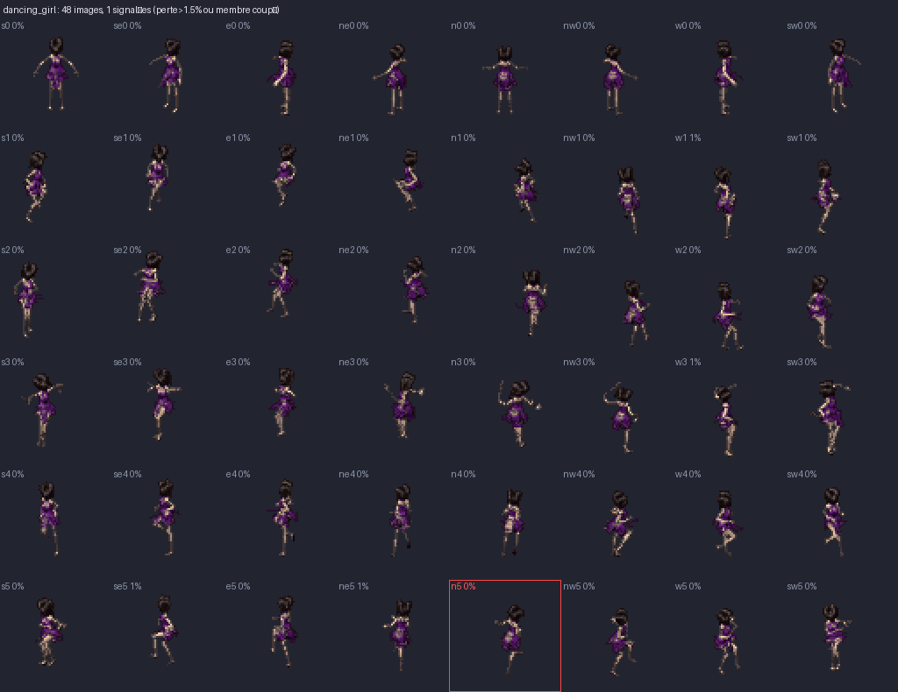
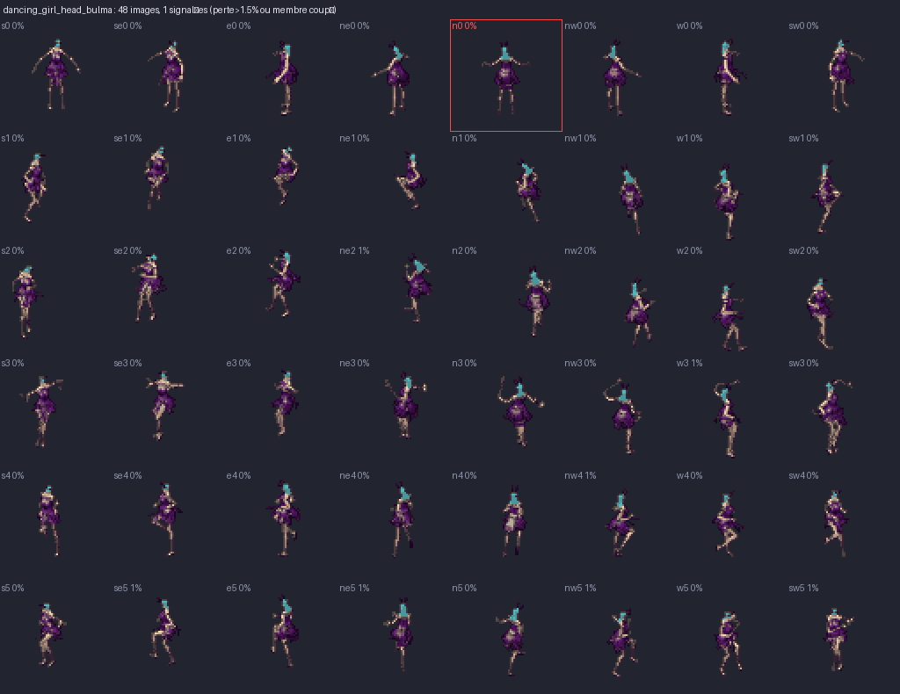
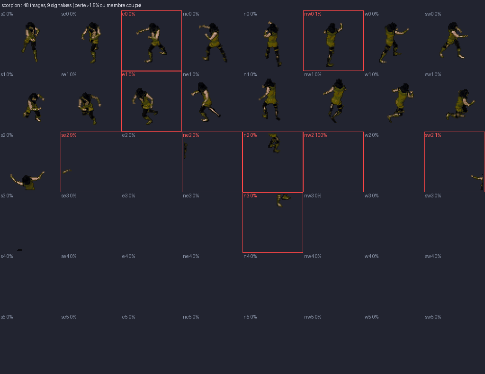
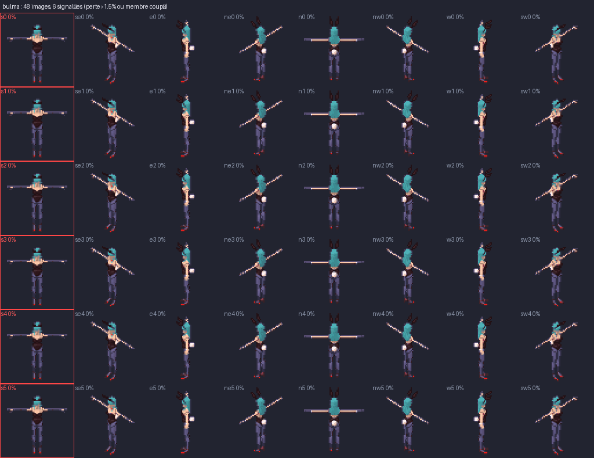

Du personnage de BD au sprite
- Fiche en pied : détourage, pose T, vues de face / profil / dos (atelier).
- Reconstruction 3D : Meshy, mode image vers 3D, sortie GLB ou FBX.
- Squelette :
forge rigavec un squelette Mixamo, objets séparés (arme, bouclier). - Animations : clips Mixamo ou banque d'animations du dépôt.
- Sprites :
forge meshyen 8 directions, 64 / 96 / 128 px, palette RGB565 pour l'AKA. - Contrôle :
forge controlsignale les membres qui disparaissent ou se confondent avec le corps.
Commandes
forge meshy MODELE.fbx --info # os, clips, textures forge meshy MODELE.fbx --anim "NomClip" --frames 6 --size 64 --texdir DOSSIER -o sortie forge rig STATIQUE.glb --skeleton Idle.fbx --texture atlas.png --clips Idle.fbx ... -o rigge.glb forge bank list # banque de personnages forge bank render NOM [--head AUTRE_PERSO] # mélange de pièces (greffe de tête) forge control sortie/ ... # planche control.png + control.json
Détails et limites : NOTES_3D.md.
Planches de contrôle
8 directions × 6 images, les images douteuses sont encadrées en rouge.
Danseuse (animation Dance)

Danseuse avec la tête de Bulma (greffe)

Scorpion

Bulma

Pour la reconstruction (Meshy)
Full-body 3D character, [description courte]. Neutral T-pose, arms straight out to the sides, palms down, legs slightly apart, feet flat, facing the camera. Clean humanoid anatomy, separated limbs (no arm touching the torso, no legs fused together). Keep the original comic-book design, colours and outfit details. No flowing cape, no floating parts. Weapon/accessory kept as a separate prop. Cel-shaded look, flat colours, no background.
Réglages : T-pose, 10 000 à 30 000 polygones, texture activée, sortie GLB ou FBX.
Liens utiles
- Meshy : image vers 3D, texture, rig et animation automatiques
- Mixamo : squelette et bibliothèque d'animations (compte Adobe gratuit)
- three.js FBXLoader : le lecteur utilisé pour les rendus
- Blender : réexporter un FBX ancien (version 6100) en FBX 2013+ ou GLB
- Dépôt character-forge
Limites connues
- FBX version 6100 illisible : à réexporter en GLB ou FBX récent.
- Greffes de tête fragiles sur les squelettes
rp_*(Sophia, Manuel). - Orc et Cocomyos n'ont pas de squelette : à rigger.
- Un modèle reconstruit avec des bras collés au corps se riggue mal : exiger la pose T.